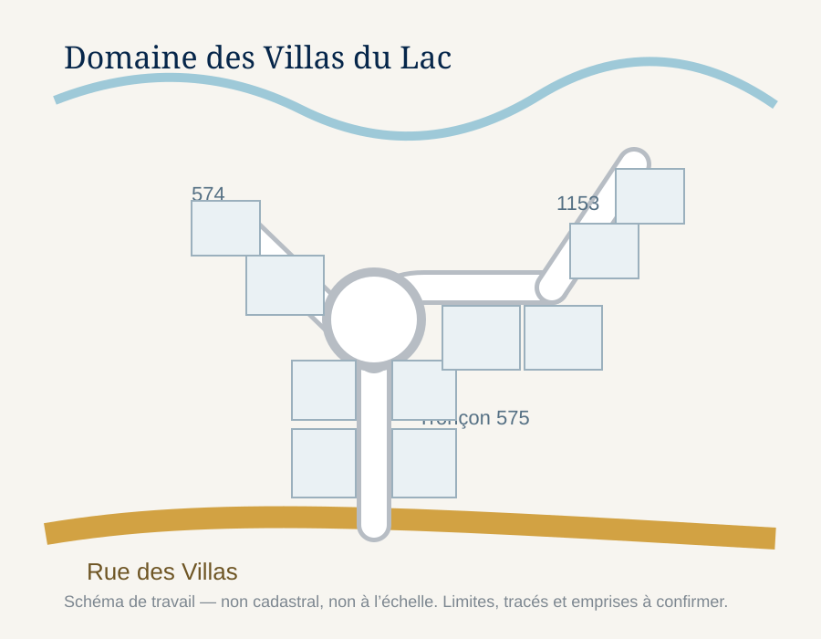

Construction des routes
Le chemin est le principal levier de création de valeur et le principal risque financier. La V1 distingue une phase A de 522,6 m et un réseau principal total de 854,3 m.
Tronçons 574 + 575 (boucle / secteur nord).
Tronçons 574 + 575 + 1153.
Emprise de rue détenue au rôle par Société Villa Deauville S.E.N.C.
Avant de déplacer une pelle mécanique
1. Verrouiller le périmètre cadastral
Arpentage, titres, emprise 1 800 349, droits de passage et lots traversés par les tronçons projetés.
2. Valider le plan concept
Nombre de lots réellement créables, dimensions minimales, accès, retournement, pente et raccordement à la rue des Villas.
3. Études environnementales et drainage
Milieux humides, cours d’eau, couvert boisé, gestion des eaux pluviales, fossés, ponceaux et impacts des règles en vigueur.
4. Avant-projet civil
Profil longitudinal, largeur, structure de chaussée, drainage, terrassement, volumes de déblais/remblais et raccordements.
5. Deux estimations indépendantes
Comparer au seuil économique du modèle. L’hypothèse de 2 500 $/m est illustrative et ne doit pas servir de soumission.
6. Convention de partage
Répartir les coûts entre propriétaires selon une règle convenue avant de lancer les travaux.

Fourchette de sensibilité du chemin
Le coût au mètre change rapidement la rentabilité. Le modèle de base utilise 2 500 $/m.
| Coût direct / m | Phase A — 522,6 m | Réseau principal — 854,3 m | Lecture |
|---|---|---|---|
| 2 000 $/m | 1 045 212 $ | 1 708 590 $ | Scénario favorable |
| 2 500 $/m | 1 306 515 $ | 2 135 738 $ | Hypothèse de travail |
| 3 000 $/m | 1 567 818 $ | 2 562 885 $ | Pression importante sur la marge |
| 4 000 $/m | 2 090 424 $ | 3 417 180 $ | Proche / au-dessus de certains seuils d’égalité du modèle |